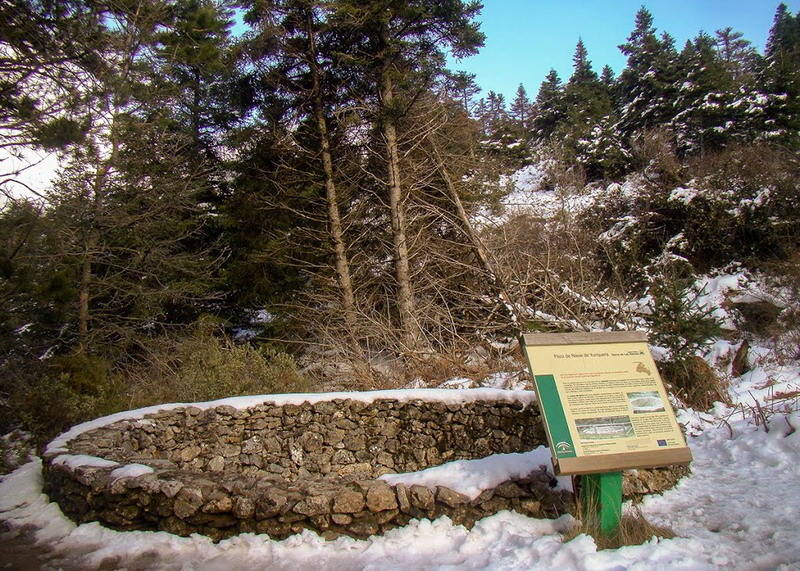

Cualquier parte de la Sierra de las Nieves, me resulta muy atractivo. El mirador de Saucillo es el más elevado de los dos y el que cuenta con mejor vista.
Hay que tener en cuenta que desde este mirador parte una cantidad enorme de rutas. Se puede decir que llegado a este punto, al que se accede en coche, tires para donde tires merecerá la pena.
La ruta propuesta es circular, de unos 4,2 Km. en total, salvando un desnivel de aproximadamente 200 m. La dificultad en mi opinión es baja, aunque esta distancia para niños pequeños se le puede hacer un poco pesada. La ventaja es que al ser al principio todo subida, se inicie por donde se inicie, la vuelta es prácticamente todo bajada, y si la familia se cansa mucho con dar la vuelta se soluciona.
A unos 850 m de empezar la ruta en sentido horario (por la izquierda), no hay que dejar pasar la oportunidad de visitar el pozo de nieve que subiendo se encuentra a la izquierda del camino, desviándonos solo unos pocos metros.
La senda está bien marcada, pero no todas las bifurcaciones de caminos, por lo que puede ser fácil cambiar de ruta y terminar en el mirador de Luis Ceballos.
Hay que tener muy en cuenta que cualquier ruta en la Sierra de las Nieves, en verano hace mucho calor y el sol pega muy fuerte (usar protector solar, mucha agua, y gorros, gafas), en invierno frío, cambios muy bruscos de clima (niebla, viento, lluvia) que con niños pequeños preocupa. En cualquier caso, es muy común ir sudando y quitándote ropa, acordándote de no haber dejado la ropa en el coche y 100 m. después morirte de frío.

Pozo de nieve
Predicción meteorológica de la zona para el municipio donde se encuadra la ruta, según la Agencia Estatal de Meteorología.